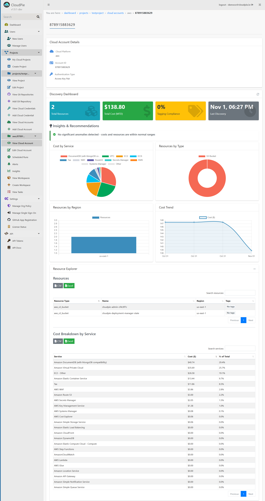
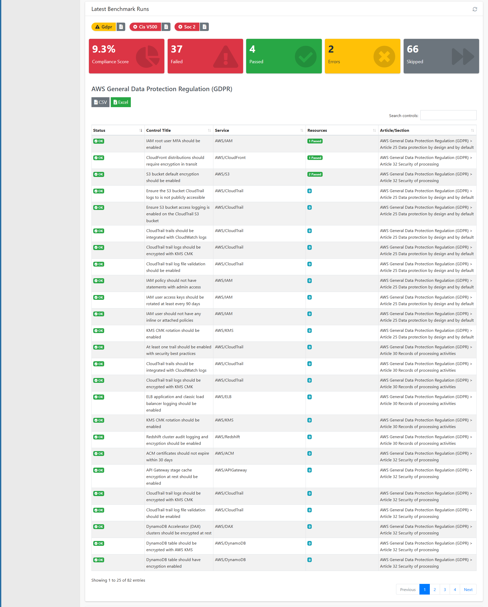
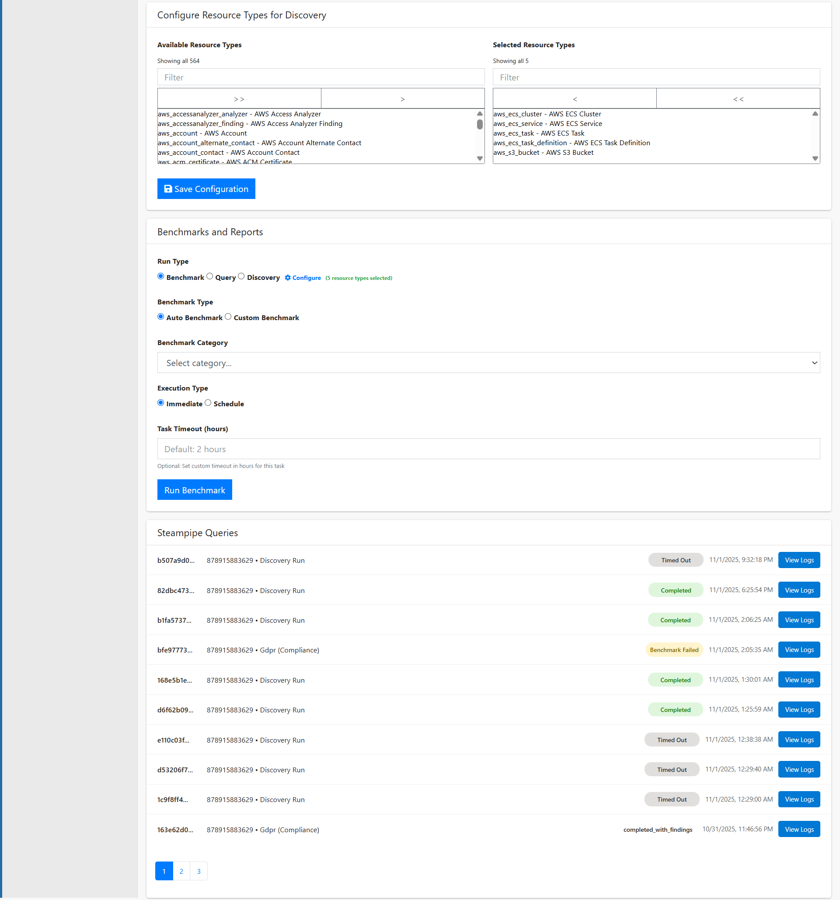

Cloud Account Dashboard and Operations
CloudPie provides a comprehensive cloud account management interface that combines real-time discovery, compliance benchmarking, and query execution capabilities. This page serves as your central hub for monitoring cloud resources, running security and compliance checks, and analyzing cost and resource trends.
Overview
When you access a cloud account page, you'll see several key sections:
- Cloud Account Details - Basic account information (platform, account ID, authentication type)
- Discovery Dashboard - Visual insights into your cloud resources, costs, and compliance
- Latest Benchmark Runs - Security and compliance benchmark results
- Configure Resource Types for Discovery - Customize which resources to discover
- Benchmarks and Reports - Execute or schedule benchmarks and queries
- Runs - Unified list of all discovery, benchmark, and query executions with logs

Discovery Dashboard
The Discovery Dashboard provides real-time visibility into your cloud infrastructure with interactive charts and metrics. This section automatically updates after each discovery run.
Summary Metrics
Four key metric cards display at the top:
- Total Resources - Count of all discovered cloud resources
- Total Cost (MTD) - Month-to-date estimated cost across all services
- Tagging Compliance - Percentage of resources with proper tags
- Last Discovery - Timestamp of the most recent discovery run
Insights & Recommendations
CloudPie analyzes your cloud environment and provides intelligent insights:
- Anomaly Detection - Identifies unusual cost spikes or resource changes
- Compliance Recommendations - Suggests improvements based on discovered resources
- Cost Optimization Tips - Highlights opportunities to reduce cloud spending
- Trend Analysis - Compares current state with historical data (available after 2+ discoveries)
Visual Analytics
The dashboard includes several interactive charts:
- Cost by Service (Pie Chart) - Breakdown of costs across AWS/cloud services
- Resources by Type (Donut Chart) - Distribution of resource types (S3 buckets, EC2 instances, etc.)
- Resources by Region (Bar Chart) - Geographic distribution of your resources
- Cost Trend (Line Chart) - Historical cost trends over time (unlocked after multiple discovery runs)
Resource Explorer
A collapsible section containing two detailed tables:
Resources Table
- Lists all discovered resources with:
- Resource Type
- Resource Name
- Region
- Tags (displayed as badges)
- Export options: CSV and Excel
- Searchable and sortable columns
Cost Breakdown by Service
- Detailed cost analysis showing:
- Service name
- Cost in dollars
- Percentage of total cost
- Export options: CSV and Excel
- Sorted by cost (highest first)
Latest Benchmark Runs
This section displays all compliance and security benchmark executions for the cloud account. Benchmarks are organized as interactive badges that provide quick status visibility.
Benchmark Badge Interface
Each benchmark appears as a color-coded badge with two parts:
- Left Badge - Click to view detailed results inline
- Green: Benchmark Succeeded
- Yellow/Warning: Benchmark Failed (controls failed)
- Red: Execution Failed
- Blue: In Progress
-
Gray: Queued or Timed Out
-
Right Icon (Logs) - Click to view execution logs
Benchmark Results Display
Clicking a successful or failed benchmark badge reveals:
Summary Statistics
Five metric cards showing: - Compliance Score - Overall percentage (color-coded: green ≥80%, yellow ≥50%, red <50%) - Failed Controls - Number of controls that failed - Passed Controls - Number of controls that passed - Errors - Controls that encountered errors during execution - Skipped Controls - Controls not applicable to your environment
Compliance Controls Table
A detailed DataTable showing all controls with: - Status - Visual badge (ALARM or OK) - Control Title - Description of the compliance control - Service - AWS service being checked (e.g., AWS/IAM, AWS/S3) - Resources - Count and status badges (Failed/Passed/Skipped) - Article/Section - Reference to compliance framework article (e.g., GDPR Article 25)
Interactive Features: - Click any row with failed resources to expand and view: - Control description - List of affected resources - Specific failure reasons for each resource - Export options: CSV and Excel - Search and filter controls - Sort by any column

Example Benchmarks: - AWS General Data Protection Regulation (GDPR) - CIS Amazon Web Services Foundations Benchmark v1.5.0 - CIS Amazon Web Services Foundations Benchmark v2.0.0 - SOC 2 Security, Availability, and Confidentiality - AWS Foundational Security Best Practices
Configure Resource Types for Discovery
Before running a discovery, you can customize which AWS resource types to include. This helps optimize discovery time and focus on relevant resources.
Important: Discovery is based only on the resource types selected for that cloud account.
Dual Listbox Interface
The configuration page shows two lists:
- Available Resource Types (Left) - All AWS resource types CloudPie can discover
- Selected Resource Types (Right) - Resources that will be discovered
Resource Type Examples
Common resource types include:
- aws_s3_bucket - AWS S3 Buckets
- aws_ecs_cluster - AWS ECS Clusters
- aws_ecs_service - AWS ECS Services
- aws_ecs_task - AWS ECS Tasks
- aws_ecs_task_definition - AWS ECS Task Definitions
- aws_account - AWS Account information
- aws_accessanalyzer_analyzer - AWS Access Analyzer
- And 500+ more resource types...
Transferring Resources
Use the control buttons to move items:
- >> - Move all items to selected
- > - Move highlighted items to selected
- < - Remove highlighted items from selected
- << - Remove all items from selected
Enabling & Persisting Discovery
- After selecting resource types, click Save Configuration
- The Discovery option in the Benchmarks and Reports form becomes enabled
- The status changes from "(Not Configured)" to "(N resource types selected)"
- The selection is saved per account and used by Discovery runs
Benchmarks and Reports
This section allows you to execute benchmarks, queries, or discovery runs on your cloud account. You can run them immediately or schedule recurring executions.
Accessing the Form
- Navigate to your cloud account page
- Scroll to the Benchmarks and Reports card
- Fill out the execution form based on your needs
Run Type Options
Benchmark
Run predefined security and compliance checks: - Auto Benchmark - Automatically runs all checks in a category - Custom Benchmark - Select specific benchmark versions
Query
Execute custom Steampipe SQL queries from a Git repository:
- Select a registered Git repository containing .sql files
- The query runs against live cloud resource data
Discovery
Discover and catalog cloud resources: - Requires a saved resource-type configuration (see above) - Runs discovery only for the selected resource types
Configure
Quick shortcut to jump to the Resource Types configuration section.
Form Fields
Benchmark Type (appears when Run Type = Benchmark): - Auto Benchmark - Runs all checks in the selected category - Custom Benchmark - Choose specific benchmark versions
Benchmark Category (for Auto Benchmark): - Compliance - Security compliance frameworks (CIS, GDPR, SOC 2, HIPAA, FedRAMP, etc.) - Public Access Risks - Identify publicly accessible resources - Cost Optimization - Find cost-saving opportunities
Git Repository (for Query run type): - Select a repository registered in your project - Repository must contain Steampipe query files
Execution Type: - Immediate - Run once, right now - Schedule - Set up recurring execution with cron or rate expressions
Task Timeout: - Default: 2 hours - Optional: Set custom timeout for long-running benchmarks
Note: After submission, each execution — Benchmark, Query, or Discovery — is recorded as a Run and appears in the Runs section at the bottom with its status and View Logs link.
Runs
This section shows the unified execution history for all operations on this cloud account. Every request for a Discovery, Benchmark, or Query is a Run and is listed here.
Run Entry Display
Each entry shows:
- Request ID - Unique identifier (e.g., b507a9d0...)
- Account ID - The cloud account being queried
- Run Type - Discovery Run, Benchmark name, or Query execution
- Status Badge - Color-coded status:
- Green: Completed
- Yellow: Benchmark Failed
- Red: Execution Failed
- Gray: Timed Out
- Blue: In Progress
- Gray (light): Queued
- Timestamp - When the run was executed
- View Logs - Button to access detailed execution logs
Status Types
- Completed - Successfully finished
- Benchmark Failed - Benchmark ran but controls failed
- Timed Out - Exceeded task timeout
- In Progress - Currently executing
- Queued - Waiting to start
Pagination
Navigate through run history using the pagination controls at the bottom.

Scheduling Runs
To configure recurring benchmarks or queries:
Create a Schedule
- In the Benchmarks and Reports form, select Schedule for Execution Type
- Enter a schedule expression:
- Cron Expression:
0 0 * * *(daily at midnight) - Rate Expression:
rate(2 hours)(every 2 hours) - Submit the form to create the schedule
Manage Scheduled Runs
- Open the Scheduled Runs menu in the sidebar for your cloud account
- View all active and paused schedules
- Click a schedule to:
- View execution history
- Enable/disable the schedule
- Access logs and results from past runs
Viewing Logs and Results
Every run generates detailed logs and results.
Accessing Logs
Click the View Logs button next to any run to: - Tail live logs for in-progress executions - View complete logs for finished runs - Download logs for offline analysis - Download CSV results for benchmark and query outputs
Log Contents
Logs include: - Steampipe initialization and plugin installation - Resource discovery progress - Benchmark control execution details - Error messages and stack traces (if applicable) - Final results summary
Downloading Results
Benchmark and query results can be exported as CSV files for: - Integration with ETL pipelines - Custom analytics and reporting - AI/ML workflows - Compliance documentation - Audit trails
Best Practices
Discovery Runs
- Run discovery regularly to keep resource inventory up-to-date
- Select only necessary resource types to reduce execution time
- Schedule daily or weekly discoveries for continuous monitoring
Compliance Benchmarks
- Run compliance benchmarks after infrastructure changes
- Set up scheduled weekly or monthly compliance checks
- Export results for compliance reporting and audit trails
- Review failed controls and remediate issues promptly
Cost Optimization
- Monitor the Cost Trend chart for unexpected spikes
- Review Cost by Service breakdown to identify high-cost areas
- Run cost optimization benchmarks monthly
- Tag resources properly to improve cost allocation
Performance
- Use custom timeouts for large-scale accounts
- Schedule resource-intensive benchmarks during off-peak hours
- Configure discovery to exclude unnecessary resource types
Troubleshooting
Discovery Not Available
- Ensure you've configured resource types via the Configure link
- At least one resource type must be selected
- Save the configuration before attempting discovery
Benchmark Timed Out
- Increase the task timeout in the form
- Consider running benchmarks during lower-traffic periods
- Check cloud account permissions
No Data in Dashboard
- Run a discovery first to populate the dashboard
- Ensure the cloud account credentials are valid
- Check that resource types are properly configured
Export Not Working
- Ensure the benchmark or query completed successfully
- Failed or timed-out runs may not have exportable data
- Check browser pop-up blockers for CSV downloads